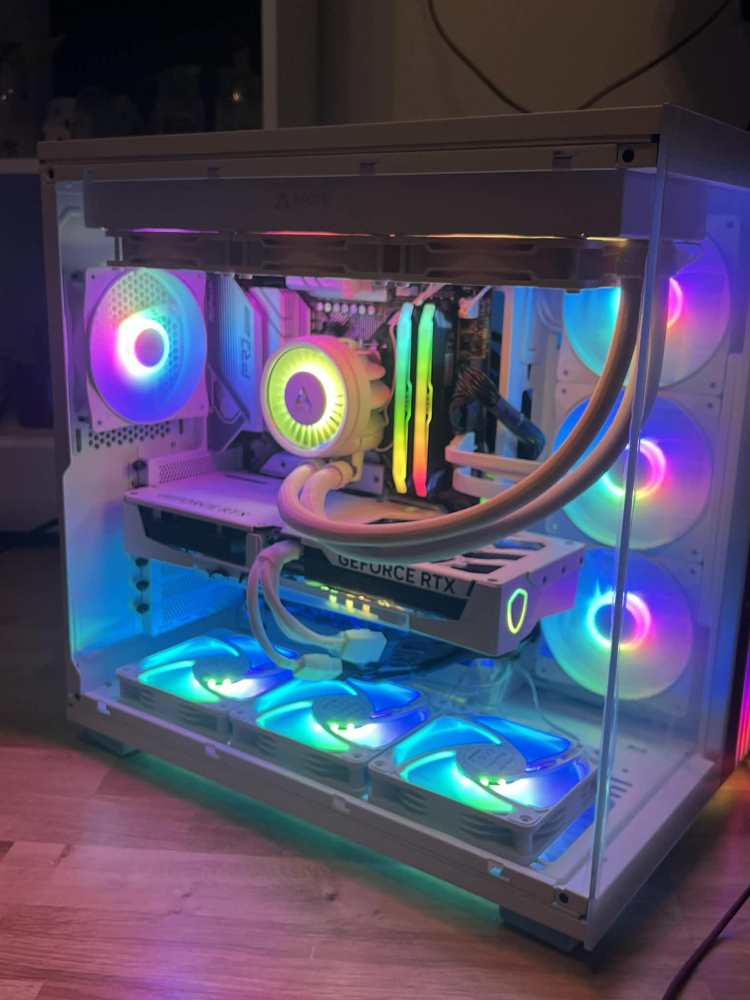
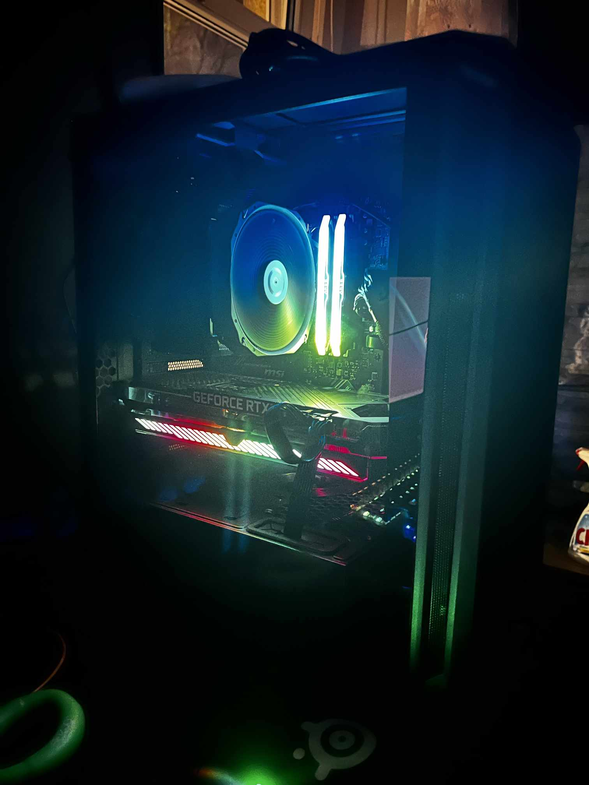
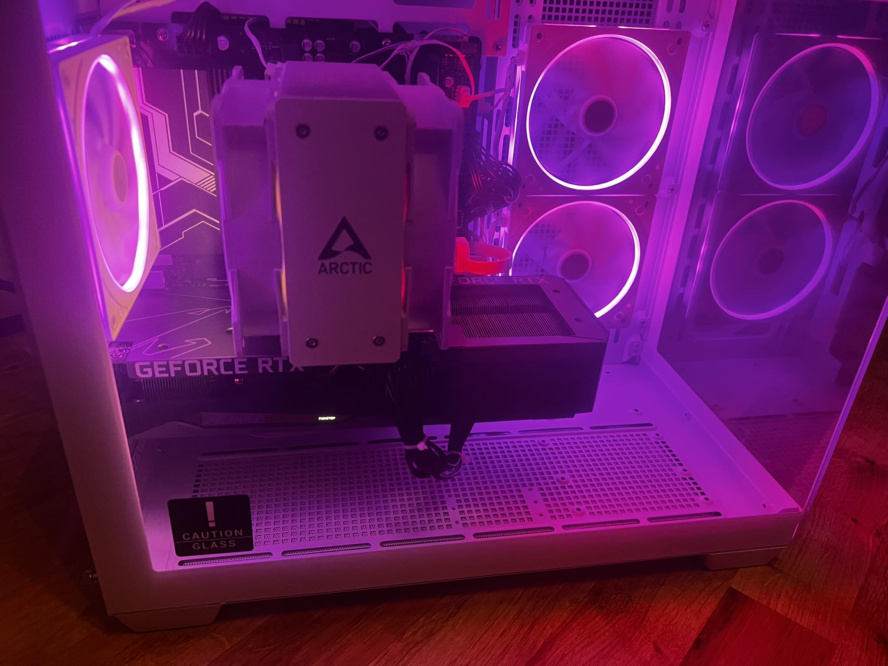
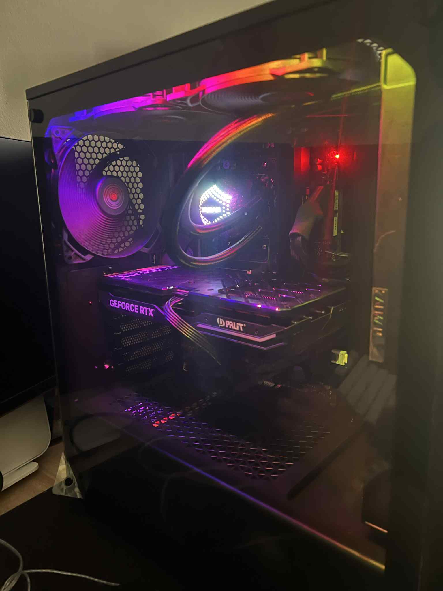
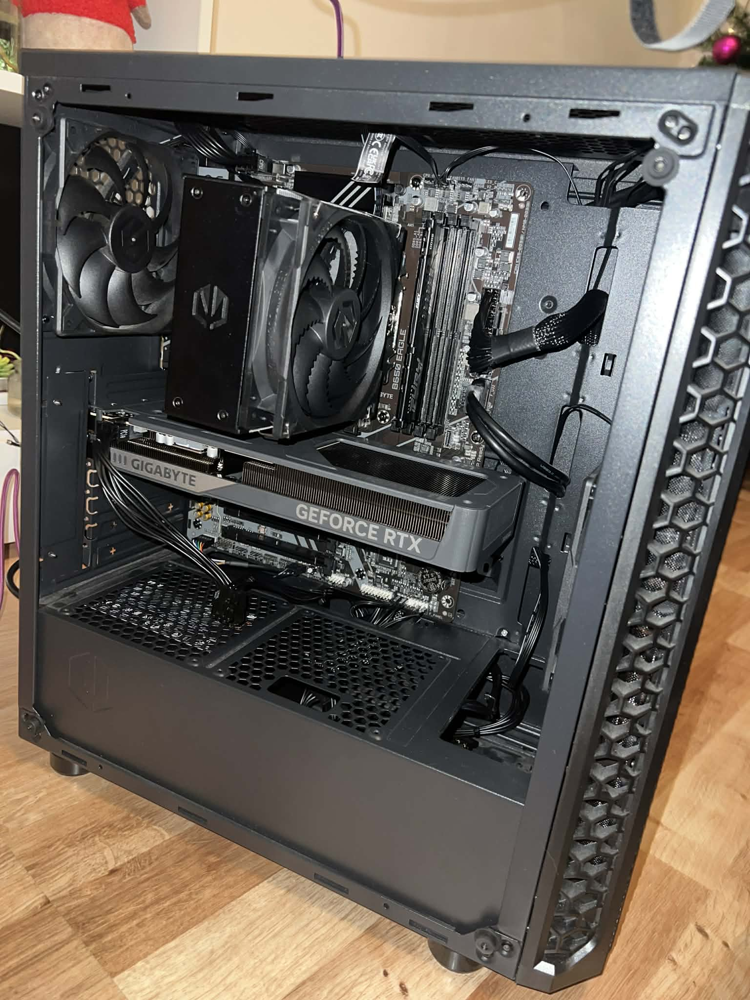

Profesjonalny montaż zestawów komputerowych (gaming, stacje robocze), sprzętowa diagnostyka usterkowa oraz optymalizacja gotowych jednostek.

Setup klasy Pro-Level zoptymalizowany pod kątem stabilności i płynności wymaganej na profesjonalnej scenie Counter Strike 2.

Konfiguracja własna bez kompromisów w pracy i rozrywce.

Profesjonalne narzędzie pracy rano i wydajna maszyna do gier wieczorem.

Perfekcyjny cable management i rygorystyczna wentylacja obudowy.

Czysta estetyka, bezkompromisowa moc w grach Singleplayer.